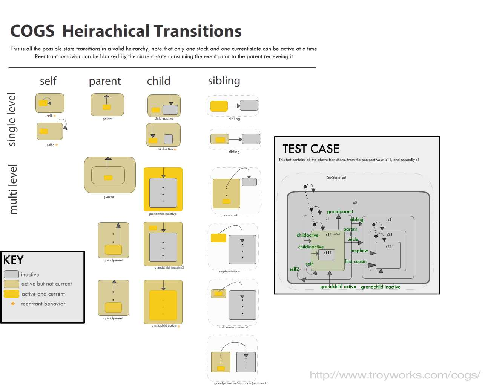
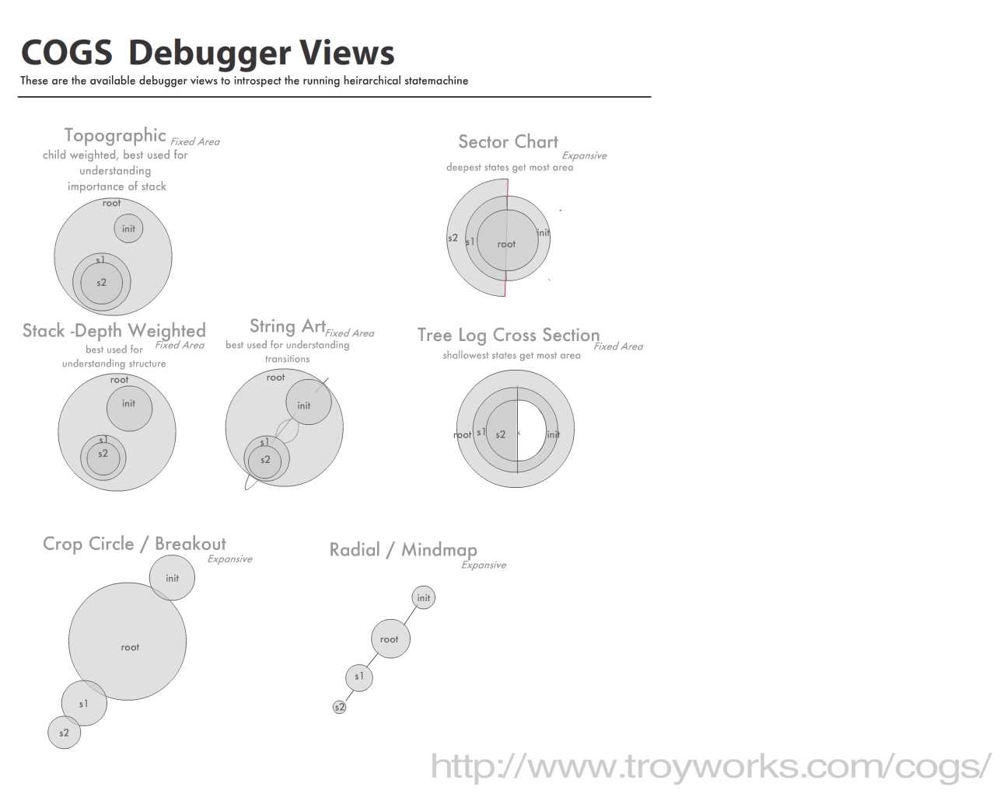

Cogs is a statemachine library for use with Flash (actionscript 3). It is actually a heirarchical statemachine, meaning it supports nested states. This differs from most State Design Patterns, and allows for some very cool features.
This is the the graphical representation of the various statemachine topologies that the COGS library supports, and the test case with all of them in.

This is a view of the debugger which can introspect a running statemachine and render these on the fly. These only show the inactive state. The idea is basically a Euler diagram, or variation on the pie chart with various weightings to expose different aspects of the running heirarchical statemachine.
In this case they are rendering the following state heirarchy/topology:
